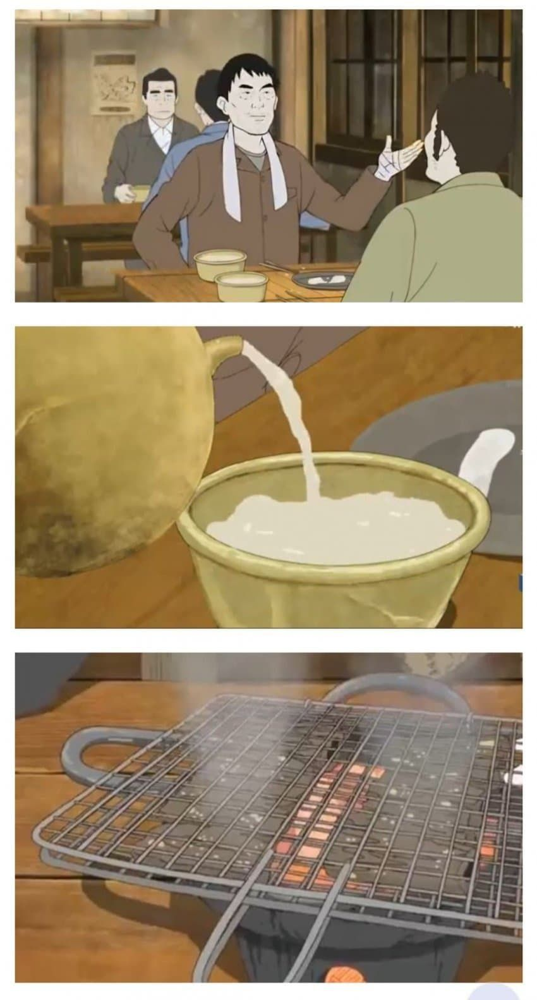
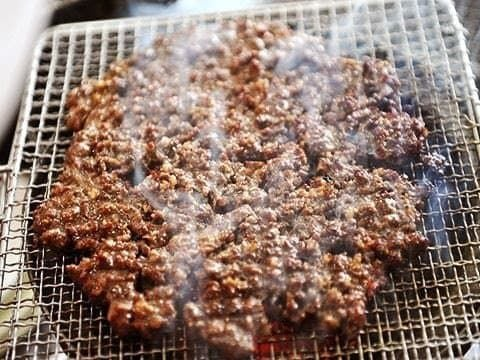
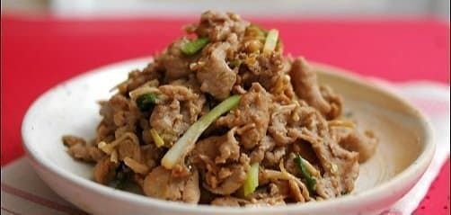
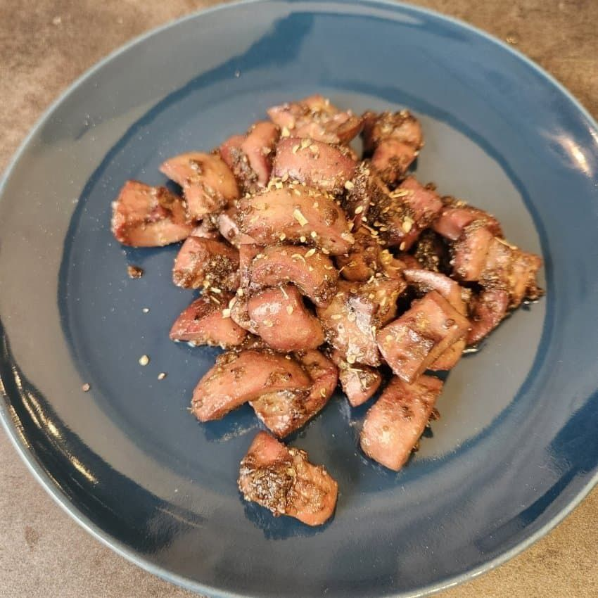
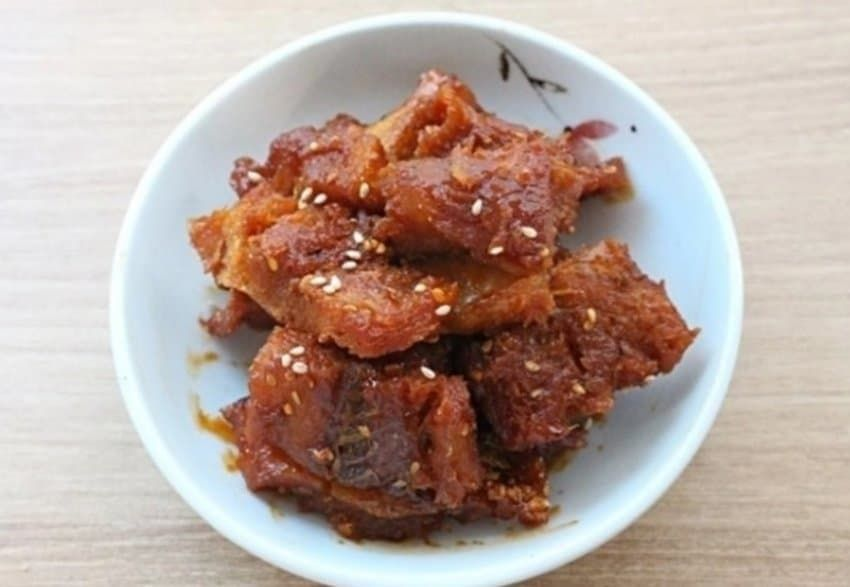
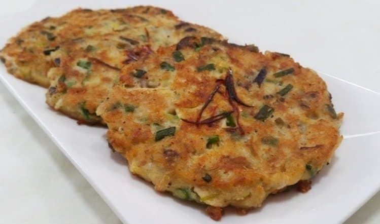
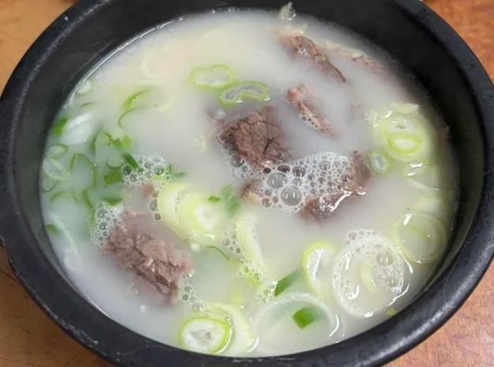

1920년대 당시 하층 노동자 하루 벌이가 1원이므로
인력거꾼 김첨지도 아마 하루 평균 그정도를 벌며 살았을 것.
그리고 김첨지가 운수 좋은 그날 번 돈은 2원 90전.
평소의 세배 가량은 벌은거임. 그리고 김첨지는 술집에서
동료들과 술을 거하게 퍼마시는데 이 술집 메뉴들을 보자면

막걸리 곱배기
추어탕

석쇠 너비아니

저육볶음

간, 콩팥 볶음

북어

빈대떡
등을 파는 술집이었고 김첨지는 여기서 동료들에게 한껏
베풀며 무려 1원을 씀. 1원은 위에서 말했듯이 노동자 하루 벌이

참고로 아내가 사달라고 한 설렁탕은 고작 10전 이었음
설렁탕 사고싶어도 돈없었으니까
아내는 그날 일하는 시간때 죽어서 친구랑 안먹고 바로와도 의미없고